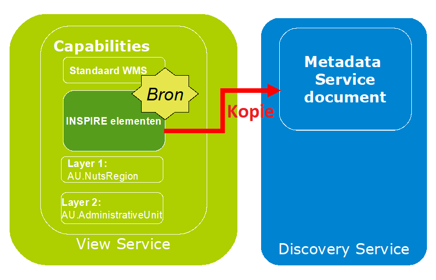

De view service (of raadpleegdienst) heeft als functie de gegevens die via de discovery service van het NGR gevonden worden, te kunnen bekijken en beoordelen. Hiertoe dient de dataprovider de INSPIRE-thema’s met een viewservice te ontsluiten. De viewservice heeft uitdrukkelijk niet de functie om ‘mooie kaartbeelden’ te maken. Het gaat om een rudimentaire inspectie en beoordeling van de INSPIRE-conforme datasets die via een de viewservice ontsloten worden. Dit omvat onder andere:
De onderstaande figuur geeft schematisch de operaties van de OGC WMS 1.3.0 weer.
De Technical Guidance beschrijft 2 scenario's om de verplichte INSPIRE-elementen op te nemen in een ISO 19128 (WMS 1.3.0) Capabilities document:
- Scenario 1: Verplichte WMS-elementen opnemen met een minimale uitbreiding voor verplichte INSPIRE-elementen als ExtendedCapabilities.
- Scenario 2: Verplichte WMS elementen opnemen aangevuld met alle INSPIRE elementen, deels via een mapping als ISO 19128 WMS-elementen en deels als ExtendedCapabilities-elementen.
Bij het kiezen van de scenario's moet in overweging worden genomen dat het gebruik van extended capabilities niet in alle tooling geimplementerd is. De beweging binnen de Europese INSPIRE community is om te komen tot implementaties zonder INSPIRE specifieke extenties. Daarvoor wordt nu gewerkt aan een derde scenario, waarbij geen gebruik wordt gemaakt van extended capabilities.
Scenario 1: Minimale extended capabilities
De volledige INSPIRE-metadata wordt opgenomen in een apart metadata-voor-services-document, dat beschikbaar wordt gesteld via een discovery service.

Het capabilities-document bevat (naast de verplichte WMS-elementen) ook de volgende INSPIRE-elementen:
- Een verwijzing (MetadataURL) naar een INSPIRE-metadata-voor-services document;
- De ondersteunde defaulttaal (eventueel aangevuld met aanvullende ondersteunde talen);
- De default respons-taal.
| INSPIRE-metadata-elementen |
M / C^ |
Extended Capabilities |
| MetadataURL |
M |
inspire_vs:MetadataURL |
| SupportedLanguages |
M |
inspire_vs:SupportedLanguages |
| ResponseLanguage |
M |
inspire_vs:ResponseLanguage |
^ M: Mandatory, C: Conditional
MetadataURL (M)
Dit element wordt opgenomen als inspire_vs:MetadataURL element in de extendedCapabilities en bevat een verwijzing, het GetRecordById request met als argument het Id (element fileIdentifier van het metadata-voor-services document), naar het metadata-voor-services-document welke gepubliceerd is in een catalog-service.
<inspire_common:MetadataUrl>
<inspire_common:URL>"https://www.nationaalgeoregister.nl/geonetwork/srv/dut/xml.metadata.get?uuid=cea38797-ea4b-4969-b979-8d25eb543a6c"</inspire_common:URL>
<inspire_common:MediaType>application/vnd.ogc.csw.GetRecordByIdResponse_xml</inspire_common:MediaType>
</inspire_common:MetadataUrl>
SupportedLanguages (M)
Zie beschrijving onder scenario 2.
ResponseLanguage (M)
Zie beschrijving onder scenario 2.
Scenario 2: Volledige extended capabilities
Het capabilities-document gaat hiermee fungeren als de bron om een metadata-voor-services-document te genereren. Het gegenereerde document wordt via een discovery service beschikbaar gesteld.

- Waar een mapping naar WMS-elementen mogelijk is, worden INSPIRE-elementen gemapped naar de WMS-elementen;
- Waar geen mapping naar WMS-elementen mogelijk is, worden de INSPIRE-elementen opgenomen als ExtendedCapabilities in het Capabilities-document.
| INSPIRE-metadata-elementen |
M/C^ |
ISO 19128 WMS-elementen |
Extended Capabilities |
| Resource Title |
M |
wms:Title |
|
| Resource Abstract |
M |
wms:Abstract |
|
| Resource Type |
M |
|
inspire_vs:ResourceType |
| Resource Locator |
C |
|
inspire_vs:ResourceLocator |
| Coupled Resource |
C |
wms:Layer/wms:MetadataURL |
|
| Spatial Data Service Type |
M |
|
inspire_vs:SpatialDataServiceType |
| Keyword |
M |
wms:Keyword |
inspire_vs:Keyword; inspire_vs:MandatoryKeyword |
| Geographic Bounding Box |
M |
wms:EX_GeographicBoundingBox |
|
| Temporal Reference |
M |
|
inspire_vs:TemporalReference |
| Spatial Resolution |
C |
wms:Abstract |
|
| Conformity |
M |
|
inspire_vs:Conformity |
| Conditions for Access and Use |
M |
wms:Fees |
|
| Limitations on Public Access |
M |
wms:AccessConstraints |
|
| Responsible Organisation |
M |
wms:ContactInformation |
|
| Metadata Point of Contact |
M |
|
inspire_common:MetadataPointOfContact |
| Metadata Date |
M |
|
inspire_common:MetadataDate |
| Metadata Language |
M |
|
inspire_common:SupportedLanguages |
^ M: Mandatory, C: Conditional
Resource Title (M)
Dit element wordt opgenomen als wms:Title element en geeft een karakteristieke naam aan de service.
Resource Abstract (M)
Dit element wordt opgenomen als wms:Abstract element en geeft een korte beschrijving van de inhoud van de service.
Resource Type (M)
Dit element heeft een vaste waarde 'service':
<inspire_vs:ExtendedCapabilities>
....
<inspire_common:ResourceType>service</inspire_common:ResourceType>
....
</inspire_vs:ExtendedCapabilities>
Resource Locator (C)
Definieert een link naar de view service. Dit kan zijn:
- Een link naar het capabilities-document van de view service;
- Een link naar een WSDL-document dat de view service beschrijft (SOAP Binding);
- Een link naar een webpagina met instructies om de service te benaderen;
- Een link naar een toepassing waarmee de view service direct kan worden benaderd.
Hieronder een voorbeeld van een link naar het capabilities-document:
<inspire_common:ResourceLocator>
<inspire_common:URL>http://www.provinciaalgeoregister.nl/pgr-wms/services?request=GetCapabilities&service=WMS&version=1.3.0</inspire_common:URL>
<inspire_common:MediaType>application/vnd.ogc.wms_xml</inspire_common:MediaType>
</inspire_common:ResourceLocator>
Coupled Resource (C)
Coupled Resource geeft informatie over de datasets waarop de view service werkt. Dit element wordt ingevuld als wms:MetadataURL (een link naar de metadata van de dataset waarop een Layer is gedefinieerd) voor iedere Layer in de view service. De MetadataURL kan op 2 manieren worden ingevuld:
- De MetadataURL bevat een link naar een metadatadocument dat beschikbaar is in een discovery service, waarbij gebruik wordt gemaakt van de GetRecordByID operatie van de discovery service om het document op te halen op basis van het
<fileidentifier> element (gevuld met een UUID) van dat document.
- De MetadataURL bevat een directe link naar een ISO19115/19139 metadata-document.
<Layer>
....
<MetadataURL type="ISO19115:2003 ">
<Format>text/xml</Format>
<OnlineResource xlink:href="http://www.nationaalgeoregister.nl/geonetwork/srv/nl/csw?Service=CSW&Request=GetRecordById&Version=2.0.2&id=f002bfc5-7d87-46b6-819e-8415422b65c9&outputSchema=http://www.isotc211.org/2005/gmd&elementSetName=full " xmlns:xlink="http://www.w3.org/1999/xlink" xlink:type="simple"/>
</MetadataURL>
....
</Layer>
Spatial Data Service Type (M)
Dit element heeft een vaste waarde 'view' en wordt ingevuld als inspire_common:SpatialDataServiceType element onder inspire_vs:ExtendedCapabilities.
<inspire_vs:ExtendedCapabilities>
<inspire_common:SpatialDataServiceType>view</inspire_common:SpatialDataServiceType>
</inspire_vs:ExtendedCapabilities>
Keyword (M)
Er is één keyword verplicht. Dat is het keyword om de classificatie van de service te duiden (classificationOfSpatialDataService). Daarnaast kunnen nog andere keywords worden opgenomen. Keywords kunnen op meerdere manieren worden ingevuld:
- met het
wms:Keyword onder het wms:Service element en
- in de
inspire_vs:ExtendedCapabilities met de elementen inspire_common:Keyword en inspire_common:MandatoryKeyword. Het verplichte keyword voor de classificatie van de service is er een uit de "Classification of Spatial Data Services" lijst. Voor een viewservice is dat in ieder geval "infoMapAccessService".
1. gebruik wms:keyword
Als een keyword afkomstig is uit een Thesaurus kan het attribuut "vocabulary" worden gebruikt om aan te geven uit welke thesaurus dat keyword afkomstig is.
<Keyword vocabulary="ISO">infoMapAccessService</Keyword>
2. gebruik inspire_vs:ExtendedCapabilities elementen
Voor het verplichte keyword voor de "Classification of Spatial Data Services" wordt het element inspire_common:MandatoryKeyword gebruikt. Dit is een element van het type classificationOfSpatialDataService.
<inspire_common:MandatoryKeyword>
<inspire_common:KeywordValue>infoMapAccessService</inspire_common:KeywordValue>
</inspire_common:MandatoryKeyword>
Voor de overige keywords wordt het element inspire_common:Keyword gebruikt. Dit laatste element heeft ook sub-elementen om aan te geven uit welke thesaurus een keyword afkomstig is.
<inspire_common:Keyword xsi:type="inspire_common:inspireTheme_dut">
<inspire_common:OriginatingControlledVocabulary>
<inspire_common:Title>GEMET - INSPIRE themes</inspire_common:Title>
<inspire_common:DateOfPublication>2008-06-01</inspire_common:DateOfPublication>
</inspire_common:OriginatingControlledVocabulary>
<inspire_common:KeywordValue>Beschermde gebieden</inspire_common:KeywordValue>
</inspire_common:Keyword>
GeographicBoundingBox (M)
Voor GeographicBoundingBox wordt het element wms:EX_GeographicBoundingBox gebruikt.
<EX_GeographicBoundingBox>
<westBoundLongitude>2.99</westBoundLongitude>
<eastBoundLongitude>7.63</eastBoundLongitude>
<southBoundLatitude>50.51</southBoundLatitude>
<northBoundLatitude>53.79</northBoundLatitude>
</EX_GeographicBoundingBox>
Temporal Reference (M)
Voor Temporal Reference wordt het element inspire_common:TemporalReference in inspire_vs:ExtendedCapabilities gebruikt. Binnen dit element moet minimaal één van de sub-elementen inspire_common:DateOfCreation, inspire_common:DateOfLastRevision of inspire_common:DateOfPublication worden ingevuld, waarbij de voorkeur uitgaat naar inspire_common:DateOfLastRevision.
<inspire_common:TemporalReference>
<inspire_common:DateOfCreation>2011-05-01</inspire_common:DateOfCreation>
<inspire_common:DateOfLastRevision>2011-05-01</inspire_common:DateOfLastRevision>
<inspire_common:DateOfPublication>2011-05-01</inspire_common:DateOfPublication>
</inspire_common:TemporalReference>
Spatial Resolution (C)
Dit element kan niet worden beschreven in ISO 19119. Daarom worden restricties voor Spatial Resolution, als deze er zijn, kwalitatief beschreven in wms:Abstract.
Conformity (M)
Hiermee wordt aangegeven of een service conformant of notConformant is aan de implementing rules van de INSPIRE richtlijn. Als dit niet bekend is dan moet de waarde notEvaluated op worden gegeven. Dit kan worden aangegeven in het element inspire_common:Conformity in de inspire_vs:ExtendedCapabilities.
<inspire_common:Conformity>
<inspire_common:Specification xsi:type="inspire_common:citationInspireInteroperabilityRegulation_dut">
<inspire_common:Title>VERORDENING (EU) Nr. 1089/2010 VAN DE COMMISSIE van 23 november 2010 ter uitvoering van Richtlijn 2007/2/EG van het Europees Parlement en de Raad betreffende de interoperabiliteit van verzamelingen ruimtelijke gegevens en van diensten met betrekking tot ruimtelijke gegevens</inspire_common:Title>
<inspire_common:DateOfPublication>2010-12-08</inspire_common:DateOfPublication>
<inspire_common:URI>OJ:L:2010:323:0011:0102:NL:PDF</inspire_common:URI>
<inspire_common:ResourceLocator>
<inspire_common:URL>http://eur-lex.europa.eu/LexUriServ/LexUriServ.do?uri=OJ:L:2010:323:0011:0102:NL:PDF</inspire_common:URL>
<inspire_common:MediaType>application/pdf</inspire_common:MediaType>
</inspire_common:ResourceLocator>
</inspire_common:Specification>
<inspire_common:Degree>notEvaluated</inspire_common:Degree>
</inspire_common:Conformity>
Conditions for Access and Use (M)
Voor het aangeven van beperkingen voor de toegang en gebruik wordt het element wms:Fees gebruikt. Dit is een vrij tekstveld. Als de service kosteloos is te gebruiken dan wordt hiervoor de tekst "Geen gebruiksbeperkingen" (no conditions apply) gebruikt. Als het onbekend is of er kosten zijn verbonden aan het gebruik van de service dan wordt de waarde "Onbekend" (conditions unknown) gebruikt.
<Fees>Geen gebruiksbeperkingen</Fees>
Limitations on Public Access (M)
Om aan te geven of er restricties gelden voor het gebruik van de service wordt het element wms:AccessConstraints gebruikt. Als er geen beperkingen gelden dan wordt hier "Geen beperkingen" ingevuld. Als er wel beperkingen gelden dan wordt hiervoor de codelijst MD_RestrictionCode gebruikt uit ISO 19115, Annex B – Data Dictionary, Section 5.24.
<AccessConstraints>Geen beperkingen</AccessConstraints>
Responsible Organisation (M)
Voor Responsible Organisation, de organisatie die verantwoordelijk is voor de view service, wordt het element wms:ContactInformation gebruikt en daarbinnen het element wms:ContactPersonPrimary, waarbij een wms:ContactPerson en een wms:ContactOrganization worden ingevuld. De rol van de Responsible Organization wordt aangeven in het element wms:ContactPosition waarbij een code uit de codelijst CI_RoleCode wordt gebruikt. Voor het element wms:ContactElectronicMailAddress wordt bij voorkeur een functioneel emailadres binnen de organisatie gebruikt.
<ContactInformation>
<ContactPersonPrimary>
<ContactPerson>Functioneel beheerder Provinciaal Georegister</ContactPerson>
<ContactOrganization>GBO provincies</ContactOrganization>
</ContactPersonPrimary>
<ContactPosition>pointOfContact</ContactPosition>
<ContactElectronicMailAddress>provinciaalgeoregister@gbo-provincies.nl</ContactElectronicMailAddress>
</ContactInformation>
Metadata Point of Contact (M)
De INSPIRE Metadata implementing rule vereist dat ook de organisatie die verantwoordelijk is voor de metadata van de view service wordt geidentificeerd. Omdat in ISO 19128 maar één organisatie kan worden opgegeven onder het element wms:ContactInformation wordt voor Metadata Point of Contact het element inspire_common:MetadataPointOfContact in de inspire_vs:ExtendedCapabilities gebruikt.
<inspire_common:MetadataPointOfContact>
<inspire_common:OrganisationName>GBO-provincies</inspire_common:OrganisationName>
<inspire_common:EmailAddress>provinciaalgeoregister@gbo-provincies.nl</inspire_common:EmailAddress>
</inspire_common:MetadataPointOfContact>
Metadata Date (M)
De datum waarop de metadata is aangemaakt. Hiervoor wordt het element inspire_common:MetadataDate in de inspire_vs:ExtendedCapabilities gebruikt.
<inspire_common:MetadataDate>2011-05-01</inspire_common:MetadataDate>
Metadata Language (M)
Voor Metadata Language wordt het element inspire_common:SupportedLanguages in inspire_vs:ExtendedCapabilities gebruikt. Binnen dit element moet exact één inspire_common:DefaultLanguage element worden opgenomen om de standaardtaal van de service weer te geven. Voor de aanduiding van de taal moet de drielettercode voor die taal worden gebruikt zoals gedefinieerd in de codelijst van ISO 639-2/B (bibliographic codes). Met het element inspire_common:ResponseLanguage wordt de taal van het capabilities-document aangeduid. Volgens het Technical Guidance document zou dit element moeten overeenkomen met de taal die als language parameter bij het GetCapabilities-request is gebruikt. Omdat een capabilities-document maar in één taal kan worden opgesteld (voor de ondersteuning van meerdere talen is per taal een capabilities-document nodig), komt de waarde van dit element in de praktijk dus overeen met de waarde van inspire_common:DefaultLanguage.
<inspire_common:SupportedLanguages>
<inspire_common:DefaultLanguage>
<inspire_common:Language>dut</inspire_common:Language>
</inspire_common:DefaultLanguage>
</inspire_common:SupportedLanguages>
<inspire_common:ResponseLanguage>
<inspire_common:Language>dut</inspire_common:Language>
</inspire_common:ResponseLanguage>
In de toekomst zal meertaligheid ook worden ondersteund in de OGC-standaarden. Daarin zal de codering van de taal plaatsvinden op basis van IETF RFC 4646 in plaats van ISO 639-2/B. Het Technical Guidance document bevat een tabel met daarin de vertaling van de ISO 639-2/B codes naar IETF RFC 4646 codes en voorziet in de toekomst ook een mogelijke wijziging van de huidige codes naar de IETRF RFC 4646 codes.
Metadata voor de Layers elementen in het Capabilities document
Een aantal parameters die in Annex III van de INSPIRE Network Services Regulation worden voorgeschreven voor een INSPIRE-viewservice zijn gemapped naar sub-elementen van wms:Layer. In de onderstaande tabel is die mapping weergegeven.
| INSPIRE-metadata-elementen |
ISO 19128 WMS-elementen van wms:Layer |
| Resource Title |
wms:Title |
| Resource Abstract |
wms:Abstract |
| Keyword |
wms:KeywordList |
| Geographic Bounding Box |
wms:BoundingBox |
| Unique Resource Identifier |
wms:Identifier + wms:AuthorityURL |
| Name |
wms:Name |
| Coordinate Reference Systems |
wms:CRS |
| Styles |
wms:Style |
| Legend URL |
wms:Style/wms:LegendURL |
| Dimension Pairs |
wms:Dimension[@name,@units] |
| Link to metadata of the corresponding spatial dataset |
wms:MetadataURL |
| Coupled Resource |
wms:DataURL |
Resource Title
De Resource Title bevat de geharmoniseerde naam die is vastgelegd in de INSPIRE-richtlijn en wordt ingevuld in het element wms:Layer/wms:Title in de taal die is weergegeven als de inspire_common:DefaultLanguage in de inspire_vs:ExtendedCapabilities.
<Layer>
....
<Title>Beschermde gebieden</Title>
....
</Layer>
Resource Abstract
De Resource Abstract geeft een korte beschrijving van de laag en wordt ingevuld in het element wms:Layer/wms:Abstract in de taal die is weergegeven als de inspire_common:DefaultLanguage in de inspire_vs:ExtendedCapabilities.
Keyword
Keywords kunnen worden opgenomen in wms:Keyword elementen onder wms:Layer/wms:KeywordList. Voor de keywords die afkomstig zijn uit een thesaurus kan de naam van de thesaurus worden opgenomen in het attribuut vocabulary.
<KeywordList>
<Keyword vocabulary="PGR Thesaurus">Landschap</Keyword>
<Keyword>geomorfologie</Keyword>
</KeywordList>
Geographic Bounding Box
Voor GeographicBoundingBox wordt het element wms:Layer/wms:BoundingBox gebruikt. Hierin worden de coördinaten voor alle ondersteunde Coordinaat Referentie Systemen van de minimum bounding box beschreven.
<BoundingBox CRS="CRS:84" minx="2.99" miny="50.51" maxx="7.63" maxy="53.79"/>
<BoundingBox CRS="EPSG:4326" minx="50.51" miny="2.99" maxx="53.79" maxy="7.63"/>
<BoundingBox CRS="EPSG:4258" minx="2.99" miny="50.51" maxx="7.63" maxy="53.79"/>
<BoundingBox CRS="EPSG:3035" minx="3073712" miny="3851511" maxx="3405160" maxy="4138318"/>
<BoundingBox CRS="EPSG:3034" minx="2652344" miny="3532708" maxx="3004189" maxy="3837437"/>
<BoundingBox CRS="EPSG:28992" minx="10000" miny="305000" maxx="280000" maxy="619000"/>
<BoundingBox CRS="EPSG:25831" minx="499705" miny="5604132" maxx="805311" maxy="5960224"/>
<BoundingBox CRS="EPSG:25832" minx="86512" miny="5606077" maxx="397932" maxy="5967089" />
Link to metadata on the spatial dataset
Het element wms:Layer/wms:MetadataURL wordt gebruikt om een verwijzing op te nemen naar het metadatadocument bij de dataset die via deze Layer wordt gevisualiseerd. Dit element wordt gevuld met een GetRecordById request naar een discovery service waarmee dit metadatadocument kan worden opgehaald of een directe link naar een ISO 19115/19139 metadatadocument.
<MetadataURL type="ISO19115:2003">
<Format>text/xml</Format>
<OnlineResource xlink:href="http://www.nationaalgeoregister.nl/geonetwork/srv/nl/csw?Service=CSW&Request=GetRecordById&Version=2.0.2&id=f002bfc5-7d87-46b6-819e-8415422b65c9&outputSchema=http://www.isotc211.org/2005/gmd&elementSetName=full" xmlns:xlink="http://www.w3.org/1999/xlink" xlink:type="simple"/>
</MetadataURL>
Unique Resource Identifier
De Unique Resource Identifier geeft de unieke identificatie weer van de bron (dataset) waarop de Layer is gebaseerd. Een Unique Resource Identifier wordt samengesteld door twee elementen te combineren, te weten wms:AuthorityURL en wms:Identifier. Het element wms:AuthorityURL kan op meerdere plekken worden gedefinieerd in het capabilities-document.
Dat kan op het hoogste niveau onder wms:Layer of in een wms:Layer element daaronder (wms:Layer/wms:Layer). De eerste methode kan worden gebruikt om één keer voor alle Layers één AuthorityURL aan te geven. Alle onderliggende wms:Layer elementen worden dan verondersteld gebruikt te maken van deze AuthorityURL.
De tweede methode kan worden gebruikt om per wms:Layer een unieke AuthorityURL op te nemen. Het laatste geval kan zich voordoen als een service is gemaakt die Layers bevat waarmee datasets van verschillende dataproviders worden gevisualiseerd. De technical guidance raadt aan om voor het element wms:Identifier een UUID te gebruiken om de dataset mee te identificeren.
<AuthorityURL name="NL.IPO">
<OnlineResource xlink:href="http://www.ipo.nl" xlink:type="simple" xmlns:xlink="http://www.w3.org/1999/xlink"/>
</AuthorityURL>
<Identifier authority="NL.IPO">
ca94a0cb-7561-4a10-a7d6-b840e56c33ff
</Identifier>
Name
Dit is de geharmoniseerde naam voor INSPIRE-thema's die wordt gebruikt voor communicatie tussen computers, in tegenstelling tot Title dat wordt gebruikt als 'naam' voor de Layer die voor mensen begrijpelijk is. Hiervoor wordt het element wms:Name gebruikt, waarbij de volgende conventie wordt aangehouden: THEME.LayerName, met het INSPIRE-theme in hoofdletters en LayerName in UpperCamelCase-schrijfwijze zonder spaties. Voor services waarin meerdere SubLayers zijn opgenomen, kan deze schrijfwijze worden uitgebreid tot THEME.LayerName.SubLayerName
| Thema |
Voorbeeld |
| Geografische Namen |
GN.GeographicalNames |
| Administratieve Eenheden |
AU.AdministrativeUnit |
| Adressen |
AD.Address |
| Kadastrale Percelen |
CP.CadastralParcel |
| Transport Netwerken |
TN.RoadTransportNetwork.RoadArea |
| Hydrografie |
HY.Network |
| Beschermde Gebieden |
PS.ProtectedSite |
Layer names en Layer titles zijn verplicht voor de view services van geharmoniseerde datasets zoals ze in de INSPIRE dataspecificaties gedefinieerd zijn.
Coordinate Reference Systems (CRS)
Minimaal moeten de geografische Coordinaat Referentie Systemen (WGS84 en ETRS89) worden opgegeven. Voor ieder CRS wordt een wms:CRS element gebruikt.
<CRS>CRS:84</CRS>
<CRS>EPSG:4326</CRS>
<CRS>EPSG:4258</CRS>
Styles
Hiervoor wordt het element wms:Layer/wms:Style gebruikt. Voor een style moet in ieder geval een Title (wms:Title, hier wordt een voor mensen leesbare naam opgenomen) en een Unique Identifier (wms:Name) worden opgenomen. Voor ieder INSPIRE-thema moet in ieder geval een style inspire_common:DEFAULT worden opgenomen. Deze default style moet zijn gedefinieerd op basis van het hoofdstuk Portrayal uit de INSPIRE dataspecificaties voor dat thema. Als er geen opmaak is gedefinieerd in de INSPIRE dataspecificatie voor het betreffende thema, dan wordt de volgende opmaak aangehouden voor de inspire_common:Default style:
- Punt: grijs vierkant, 6 pixels;
- Lijn: zwarte doorgetrokken lijn, 1 pixel;
- Vlak: zwarte doorgetrokken lijn, 1 pixel met een grijze vulling.
Naast de inspire_common:Default Style kunnen nog aanvullende Style-elementen worden opgenomen voor andere visualisaties.
Voor de style moet ook een URL worden opgenomen, die verwijst naar een legenda in de taal die is gedefinieerd als inspire_common:DefaultLanguage voor de service in inspire_vs:ExtendedCapabilities. Hiervoor wordt het element wms:LegendURL gebruikt.
<Style>
<Name>inspire_common:DEFAULT</Name>
<Title>Beschermde gebieden</Title>
<LegendURL>
<Format>image/png</Format>
<OnlineResource xlink:href="http://www.provinciaalgeoregister.nl/pgr-wms/services?request=GetLegendGraphic&service=WMS&version=1.3.0&width=25&height=25&format=image/png&layer=PS.ProtectedSite&style=inspire_common:DEFAULT" xlink:type="simple" xmlns:xlink="http://www.w3.org/1999/xlink"/>
</LegendURL>
</Style>
Default styling is gedefinieerd in de Technical Guidance voor view services (zie TG view service v3.11 paragraaf 4.2.3.3.4.8, eis 43 en 44). Dit is dus altijd verplicht voor view services, ook al is het nog niet vereist aan de INSPIRE dataspecificaties te voldoen. Zolang de portrayal zoals vastgelegd in de INSPIRE dataspecificaties (nog) niet verplicht is, moeten serviceproviders tenminste de default styling uit view services toepassen (requirement in de Technical Guidance voor view services).
"inspire_common:DEFAULT" is een placeholder voor een Style Unique Identifier van de INSPIRE default style, maar je kan ook een andere naam kiezen voor de (default) stijl. De naam van de Style hoeft dus niet per se "inspire_common:DEFAULT" te zijn.
Dimension Pairs
Dit element wordt alleen gebruikt als de Layer afhankelijk is van tijd of hoogte. In dat geval wordt het element wms:Dimension gebruikt. Als een laag volledig is gedefinieerd door de beide assen van het CRS, dan wordt dit element niet ingevuld.
Coupled Resource
Coupled Resource geeft een verwijzing die toegang biedt tot de dataset die in deze Layer wordt gevisualiseerd. Dit kan een verwijzing zijn naar bijvoorbeeld een zip-bestand dat kan worden gedownload of naar een download service waarmee toegang tot deze dataset wordt geboden. Hiervoor wordt het element wms:Layer/wms:DataURL gebruikt.
<DataURL>
<Format>text/xml</Format>
<OnlineResource xlink:href="http://www.provinciaalgeoregister.nl/pgr-wfs/services?Service=WFS&Request=GetFeature&Version=1.1.0&TypeName=PS.ProtectedSite.AW" xmlns:xlink="http://www.w3.org/1999/xlink" xlink:type="simple"/>
</DataURL>
<DataURL>
<Format>application/zip</Format>
<OnlineResource xlink:href="http://www.provinciaalgeoregister.nl/downloads/NL.IPO.PS.ProtectedSite.EHS.zip" xmlns:xlink="http://www.w3.org/1999/xlink" xlink:type="simple"/>
</DataURL>